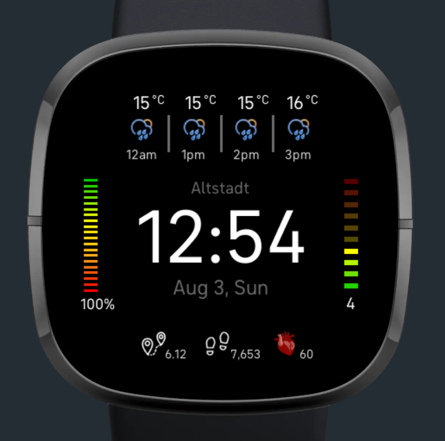

About This Project
This is a watch face for a Fitbit Sense. The battery indicator on the left side will darken based on the battery percentage. Weather details are obtained through the Open Weather Map API. The UV indicator on the right side similarly changes based on the current UV index. The weather at the top shows the weather for the current hour, plus the next 3 hours. There is an icon for the weather conditions and the temperature shown. In the middle, there's the time, date, and location. At the bottom is the current heart rate of the user, the amount of steps taken that day, and the distance traveled that day by foot.
Key Features
- Responsive Battery Indicator
- Responsive UV Indicator
- Current Weather + 3 next hours
Technologies Used
- JavaScript
- Node.js
- CSS
- Open Weather Map API
Links
Screenshots
Lessons Learned
I learned what it's like building a smart watch interface, how to access data from the internal sensors. I also gained practice in how to access a public API, and creating a user interface.